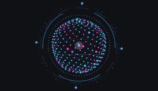
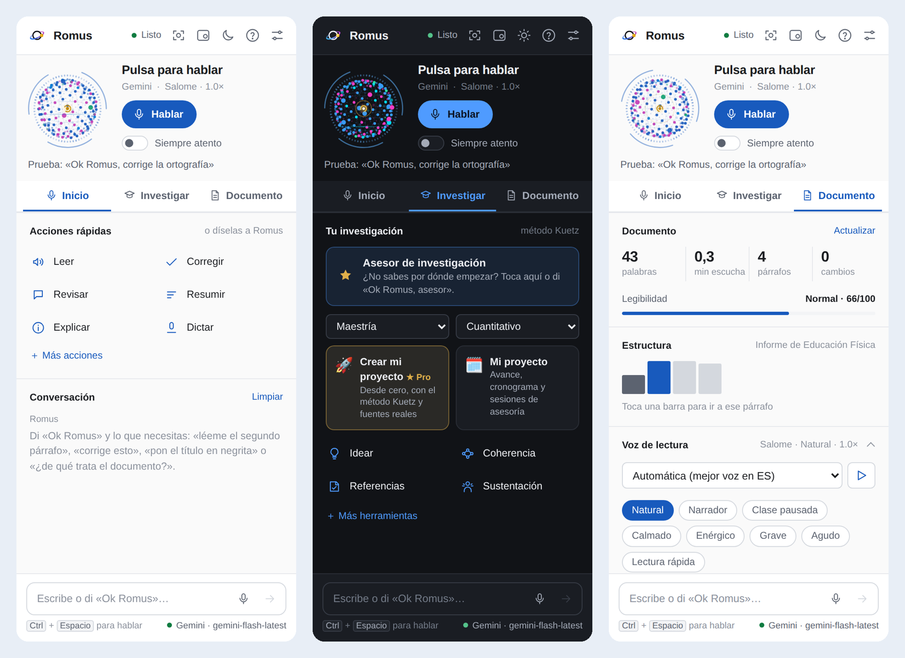
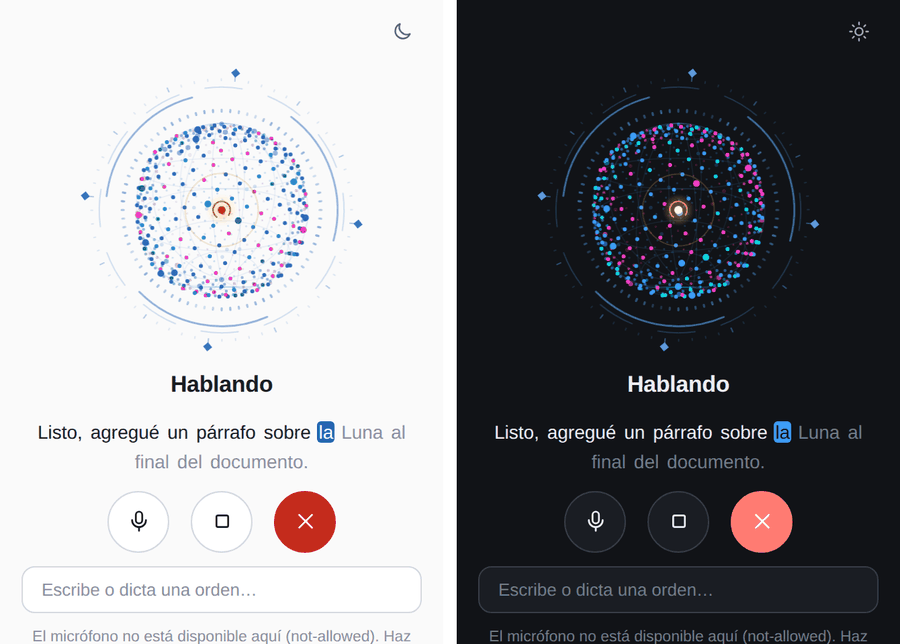
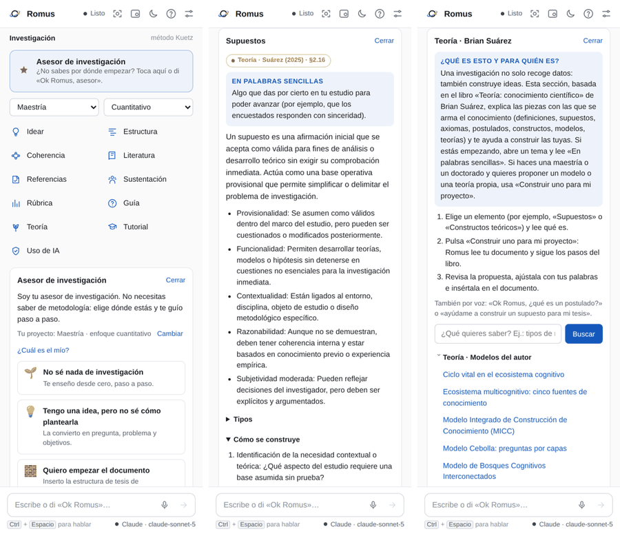
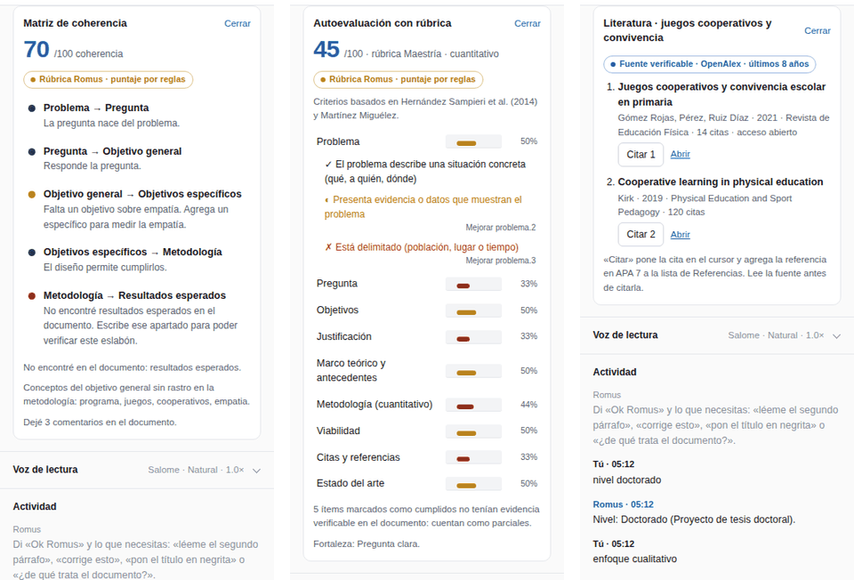
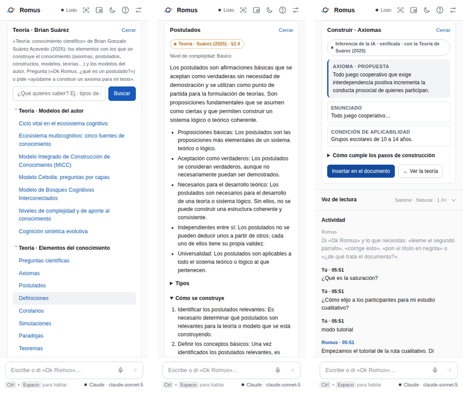
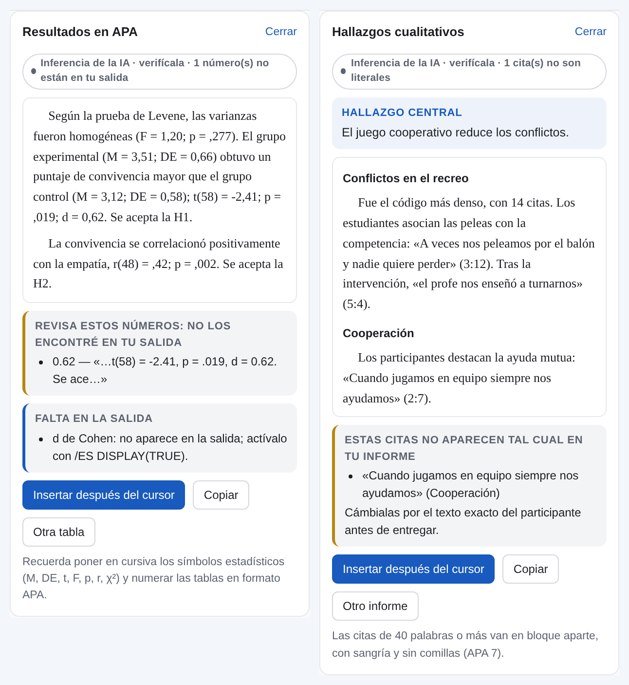
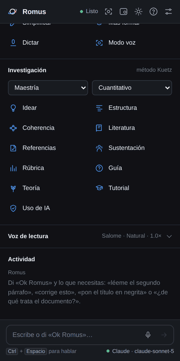

Romus es un asistente de voz con inteligencia artificial que vive dentro de Microsoft Word. Dices «Ok Romus» y tu orden, y él lee, corrige, redacta o da formato a tu documento. También es un asesor de investigación: te acompaña desde la idea hasta la sustentación de tu proyecto o tesis.
1Instalar Romus
Elige según el Word que uses. No necesitas permisos de administrador.
Word de escritorio en Windows (recomendado: instalador)
- Cierra Word por completo.
- Descarga Instalar-Romus.exe y ábrelo.
- Si Windows muestra «Windows protegió su PC», pulsa Más información → Ejecutar de todas formas. Aparece porque el instalador es nuevo y no tiene firma comercial.
- Sigue el asistente: Siguiente → Instalar → Finalizar. Deja marcada la opción de abrir Word.
Word para la web (office.com) o Mac
- Abre passbri.github.io/romus y pulsa Descargar mi manifest.xml.
- Word para la web: abre un documento → Inicio → Complementos → Más complementos → Mis complementos → Cargar mi complemento → elige el archivo → Cargar.
- Mac: copia el archivo en
~/Library/Containers/com.microsoft.Word/Data/Documents/wef(créala si no existe) y reinicia Word.
2Abrir Romus
- Abre Word y cualquier documento.
- En la pestaña Inicio, a la derecha, pulsa el botón Romus.
- Se abre el panel con la esfera. La primera vez, Word puede pedir permiso para el micrófono: acéptalo.

3Conectar una IA gratis (Google Gemini)
Leer en voz alta funciona sin IA. Para todo lo demás, Romus necesita una IA. Gemini tiene un plan gratuito y además permite que Romus te oiga en Word de escritorio.
- Entra a aistudio.google.com/apikey con tu cuenta de Google y pulsa Create API key. Copia la clave (empieza por
AIza…). - En Romus pulsa Ajustes (ícono de controles, arriba a la derecha) → IA en uso → + Agregar → Google Gemini.
- Pega la clave. En Modelo deja
gemini-flash-latest. - Pulsa Probar conexión y corrección. Debe decir «Conexión correcta».
4Hablar con Romus
- Activa Siempre atento en el panel.
- Di «Ok Romus» + tu orden en la misma frase. Ejemplo: «Ok Romus, lee el documento».
- Después de responder, Romus te sigue escuchando unos segundos: puedes continuar sin repetir su nombre.
- Para terminar, di «Gracias, Romus».

5Trabajar tus documentos
| Quieres… | Di… |
|---|---|
| Escuchar el documento | «lee el documento», «lee desde aquí», «más lento», «para» |
| Corregir ortografía | «corrige el documento» (los cambios quedan con control de cambios) |
| Resumir o explicar | «resume el documento», «explícame esto» |
| Reescribir | «hazlo más formal», «simplifica este párrafo» |
| Redactar | «escribe una conclusión al final» |
| Dar formato | «pon el título en negrita y centrado» |
| Dictar | «modo dictado» … «termina dictado» |
| Que hable a tu manera | «habla más formal», «a partir de ahora trátame de usted» |
6El asesor de investigación (aunque no sepas nada)
No necesitas saber metodología. Romus te pregunta dónde estás y te guía.
- En el panel, abre la pestaña Investigar y pulsa Asesor de investigación, o di «Ok Romus, asesor» o «no sé por dónde empezar».
- Elige tu nivel (pregrado, especialización, maestría, doctorado o posdoctorado). Si no sabes qué enfoque usar, pulsa «¿Cuál es el mío?».
- Elige dónde estás y sigue las indicaciones:
No sé nada de investigación
Tutorial paso a paso desde cero. Avanza con «siguiente paso».
Tengo una idea
Romus la convierte en pregunta, problema y objetivos.
Quiero empezar el documento
Inserta la estructura de tu nivel con una guía en cada apartado.
Tengo un borrador
Coherencia, referencias y rúbrica, con comentarios en tu documento.
Voy a sustentar
Simulacro con jurado por voz.
Tengo una duda
«¿Qué es la saturación?», «¿cómo calculo la muestra?»


★Mi proyecto, sesiones de asesoría y Romus Pro
- Mi proyecto: toca el botón o di «Ok Romus, mi proyecto». Verás tu avance por etapas y lo que sigue. Escribe tu fecha de entrega y pulsa Crear cronograma.
- Sesión de asesoría: di «sesión de asesoría» cada semana. Romus te dice qué hiciste bien, tus 3 prioridades, preguntas para pensar y tareas con plazo. En la siguiente sesión revisa si las cumpliste.
- Crear mi proyecto ★ Pro: responde 4 preguntas (tema, con quiénes y dónde, problema y recursos). Romus propone título, pregunta y objetivos; tú los apruebas o pides cambios. Luego busca fuentes reales y escribe el proyecto completo en tu documento. Tienes 1 proyecto de prueba gratis.
7Teoría: construir conocimiento
Una investigación no solo recoge datos: también construye ideas. Esta sección se basa en el libro Teoría: conocimiento científico de Brian Suárez.
- Pulsa el botón Teoría o di «Ok Romus, abre la teoría».
- Abre un elemento, por ejemplo Supuestos, y lee primero el recuadro «En palabras sencillas».
- Si quieres uno para tu trabajo, pulsa Construir uno para mi proyecto, o di «ayúdame a construir un supuesto para mi tesis». Romus lee tu documento y sigue los pasos del libro.
- Revisa la propuesta, ajústala con tus palabras y pulsa Insertar en el documento.

8Analizar tus datos con SPSS o ATLAS.ti

Cuantitativo (SPSS o PSPP, que es gratis)
- Escribe en tu documento las variables y las hipótesis. Luego, en la pestaña Investigar, abre Más herramientas y toca SPSS o di «Ok Romus, genera la sintaxis de SPSS».
- Revisa que los nombres de las variables coincidan con las columnas de tu base. Si aún no la tienes, descarga la plantilla de datos: una columna por variable y un participante por fila.
- Pulsa Copiar sintaxis. En SPSS abre tu base, ve a Archivo → Nueva → Sintaxis, pega, selecciona todo y pulsa Ejecutar.
- Con Insertar plan de análisis, Romus escribe en tu metodología qué prueba usarás para cada hipótesis y por qué.
- Con la salida lista, di «redacta los resultados en APA». Copia las tablas del visor de SPSS (clic derecho → Copiar), pégalas y pulsa Redactar en APA. Romus te avisa si algún número no está en tu salida.
Cualitativo (ATLAS.ti)
- Toca ATLAS.ti y elige Libro de códigos. Romus lo arma con tus categorías y objetivos.
- Descarga el Excel y en ATLAS.ti usa Códigos → Importar lista de códigos, marcando «Mis datos contienen encabezados».
- Codifica tus entrevistas. Luego exporta el informe de códigos con sus citas, pégalo en Romus y pulsa Redactar hallazgos. Romus te marca cualquier cita que no sea literal.
9Prepararte para sustentar y entregar

Verificador de citas y referencias
Di «Ok Romus, verifica las referencias». Romus cruza cada cita del texto con la lista de referencias, revisa el formato APA 7 y comprueba en OpenAlex que cada fuente exista de verdad. Si una referencia la inventó una IA, la marca.
Simulacro de sustentación
- Di «Ok Romus, simulacro de sustentación».
- Romus hace de jurado: lee tu documento y te hace preguntas en voz alta.
- Responde hablando, sin decir «Ok Romus». Cuando termines, di «terminé».
- Recibes una calificación, lo que te faltó y una respuesta más sólida. Di «siguiente» para continuar. Al final verás qué repasar.
Antes de entregar, di «declaración de uso de IA»: Romus agrega al final cómo y para qué se usó la IA.
10Problemas frecuentes
| Problema | Solución |
|---|---|
| No aparece el botón Romus | Cierra Word y vuelve a ejecutar el instalador. En Word para la web, vuelve a cargar el manifiesto. |
| Romus no me oye o el micrófono se apaga | Conecta Gemini (paso 3), activa «Siempre atento» y permite el micrófono. En Ajustes → Voz → Reconocimiento de voz elige «Oído de Romus». |
| Repite o responde a su propia voz | Usa audífonos o baja el volumen. |
| «Límite de la IA por minuto» | El plan gratuito de Gemini tiene límites: espera un momento. |
| Veo una versión vieja | Cierra Word por completo, espera 10 minutos y ábrelo de nuevo. Como último recurso, vacía %LOCALAPPDATA%\Microsoft\Office\16.0\Wef\: ojo, eso borra tus ajustes y tendrás que volver a pegar la clave de la IA. |
| Quiero desinstalar | Menú Inicio → Romus → Desinstalar Romus, o Configuración → Aplicaciones. |